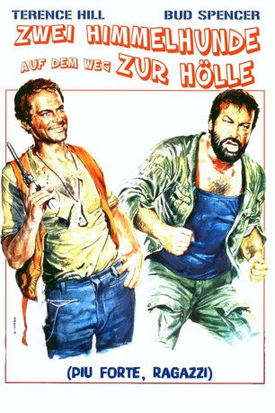
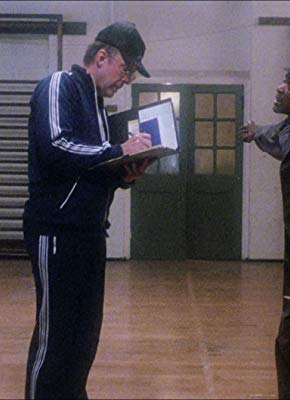

#4403 Zwei Himmelhunde auf dem Weg zur Hölle
Alternativ: All the Way Boys (Englischer Titel)
 
 IMDB-Wertung: 6.7 / 10
IMDB-Wertung: 6.7 / 10  Metascore: 0
Metascore: 0 
Die zwei Tagediebe Plata und Salud versuchen sich als professionelle Bruchpiloten. Für die Hälfte der Versicherungssumme täuschen sie Flugzeugabstürze im undurchdringlichen Dschungel Südamerikas vor. Doch der nächste Auftrag verläuft alles andere als geplant: Die Maschine schmiert über einer Kolonie von Diamantenschürfern ab, die von dem skrupellosen Mr. Ears ausgebeutet werden. Er diktiert die Diamantenpreise, besitzt die einzige Kantine und das einzige Flugzeug. Er hat alle in der Hand ... alle, bis auf Salud und Plata. Die beiden Haudegen sagen ihm und seinen Schergen mit schwingenden Fäusten den Kampf an.
Jahr: 1972
Dauer: 105 Minuten
FSK: 16
Land: Studio: Astro DistributionTonspuren:
Untertitel:
Auflösung: 1080p (1920x1080) Größe: 8816 MB
Genre: Action, Komödie, Abenteuer
Regisseur: Giuseppe Colizzi
Drehbuch: Jac Schaeffer
Soundtrack:
Darsteller:
 Terence Hill als Plata
Terence Hill als Plata Bud Spencer als Salud
Bud Spencer als Salud Cyril Cusack als Matto
Cyril Cusack als Matto Ted Rusoff als Interrogator , uncredited
Ted Rusoff als Interrogator , uncredited Reinhard Kolldehoff als Mr. Ears
Reinhard Kolldehoff als Mr. Ears- Carlos Muñoz als Pilot, discussing with Salud in town
- Riccardo Pizzuti als Naso
- Marcello Verziera als Puncher
- Sergio Bruzzichini als
 Alexander Allerson als Saluds brother
Alexander Allerson als Saluds brother- Ferdinando Murolo als Man in jungle, searching for beer
- Michel Antoine als Daveira
- Antoine Saint-John als One of Mr. Ears gang
- Anthony La Penna als Ears , uncredited
- Andy Luotto als Teetotaler , uncredited
- Gene Luotto als Pilot , uncredited
- Edward Mannix als Prospector , uncredited
- Richard McNamara als Salud , uncredited
- Raffaele Mottola als Man with Moustache Supervising the Airspace , uncredited
-  Marc Smith als Naso , uncredited
Datei: X:\Person\Bud Spencer + Terence Hill\Zwei Himmelhunde auf dem Weg zur Hölle (1972, FSK16, 1920x1080).mkv seit 13.09.2016
Festplatte: HD Collection-7+mehr(A-Z)+Person
 Es gibt insgesamt 43 Filme in der Gruppe 'Person\Bud Spencer + Terence Hill'
Es gibt insgesamt 43 Filme in der Gruppe 'Person\Bud Spencer + Terence Hill'